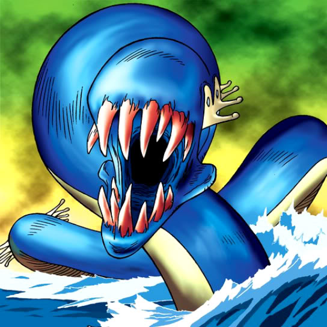

Kairyu-Shin

Description: "All spaces within a range of 1 space are transformed to Sea terrain when this card is flipped face-up."
STATS
ATK: 1800
DEF: 1500DECK COST
Deck Cost per Card: 38EFFECT NOT IMPLEMENTED
Fusion List (24 Possible Fusions)
- Kairyu-Shin + Akihiron = Aqua Dragon
- Kairyu-Shin + Ancient Tree of Enlightenment = B. Dragon Jungle King
- Kairyu-Shin + Behegon = Kairyu-Shin
- Kairyu-Shin + Boulder Tortoise = Aqua Dragon
- Kairyu-Shin + Bolt Escargot = Twin-Headed Thunder Dragon
- Kairyu-Shin + Bolt Penguin = Twin-Headed Thunder Dragon
- Kairyu-Shin + Catapult Turtle = Sea King Dragon
- Kairyu-Shin + Electric Lizard = Twin-Headed Thunder Dragon
- Kairyu-Shin + Electric Snake = Twin-Headed Thunder Dragon
- Kairyu-Shin + Giant Turtle Who Feeds on Flames = Sea King Dragon
- Kairyu-Shin + High Tide Gyojin = Aqua Dragon
- Kairyu-Shin + Kaminari Attack = Twin-Headed Thunder Dragon
- Kairyu-Shin + Kaminarikozou = Twin-Headed Thunder Dragon
- Kairyu-Shin + Kanikabuto = Sea King Dragon
- Kairyu-Shin + LaLa Li-oon = Twin-Headed Thunder Dragon
- Kairyu-Shin + Monsturtle = Sea King Dragon
- Kairyu-Shin + Octoberser = Aqua Dragon
- Kairyu-Shin + Oscillo Hero #2 = Twin-Headed Thunder Dragon
- Kairyu-Shin + Roaring Ocean Snake = Aqua Dragon
- Kairyu-Shin + Sanga of the Thunder = Twin-Headed Thunder Dragon
- Kairyu-Shin + The Immortal of Thunder = Twin-Headed Thunder Dragon
- Kairyu-Shin + Thunder Dragon = Twin-Headed Thunder Dragon
- Kairyu-Shin + Tripwire Beast = Twin-Headed Thunder Dragon
- Kairyu-Shin + Turu-Purun = Sea King Dragon